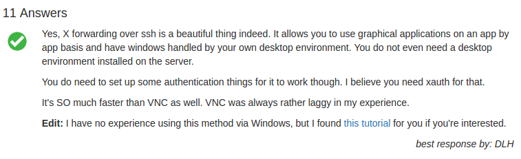
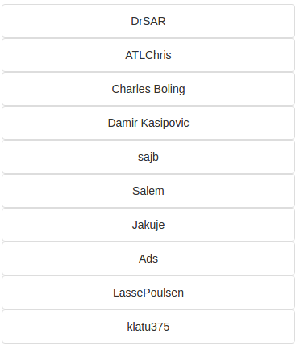

In this view we can see the content of the selected ticket filtered by the options we have choosed.
We are going to explain everything from this question, but it will be the same for all the questions:
If the ticket is opened there will bo no accepted answers but in the case that the ticket is closed
we will see the best answer like this:

On the right part of the view we can see the 10 most related tickets
to the one we are seeing, ordered by similarity.
And below these list there's also the list of the best users
capable to solve the ticket, this list has been made considering the number of similar tickets solved
by the user.
